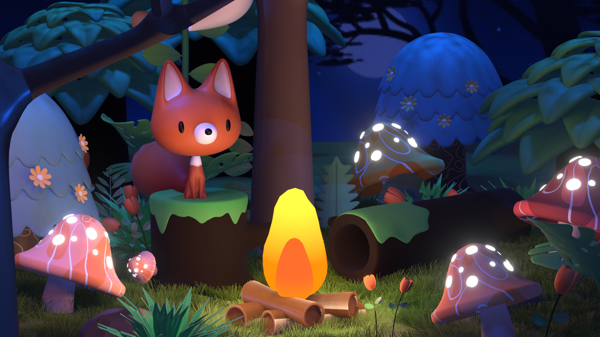
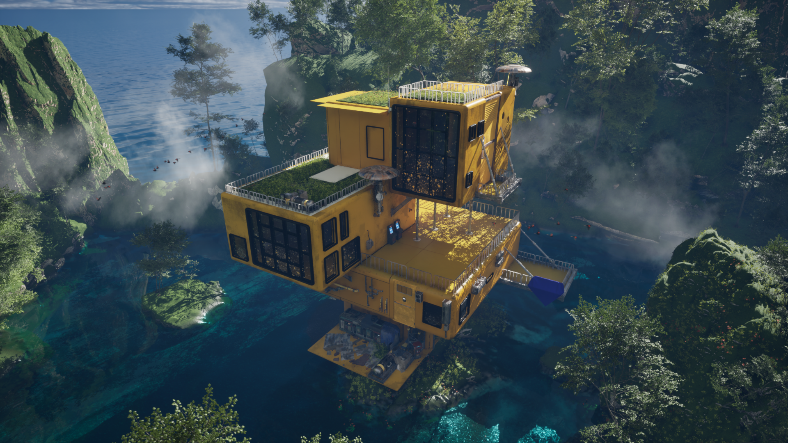
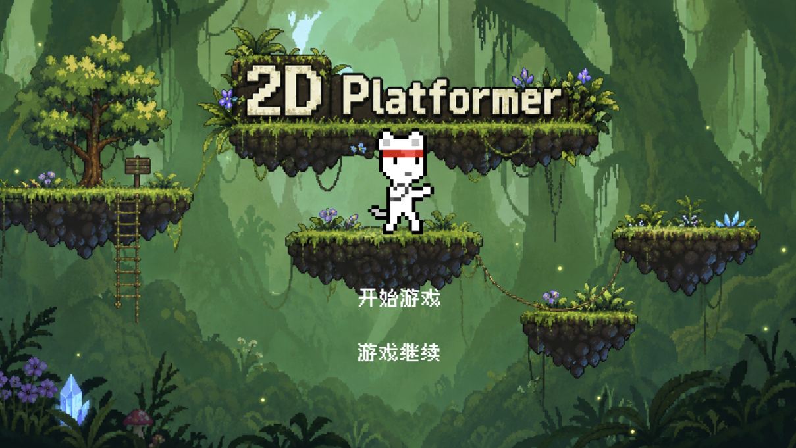

《无法逃离》：三维游戏场景设计的得与失
我的第一个完整三维游戏项目。从氛围基调、光照方案到关卡动线，聊聊三张场景截图背后的设计取舍……
记录我做每一个项目时的思考、踩坑与成长，全部来自真实作品。

作为视觉传达专业的学生，我最早接触的是海报和品牌。一次偶然的机会打开了 Blender，从此一发不可收拾——从小狐狸建模到 UE5 场景搭建，这篇文章记录我从零基础到能独立搭场景的完整过程。
阅读全文 →我的第一个完整三维游戏项目。从氛围基调、光照方案到关卡动线，聊聊三张场景截图背后的设计取舍……

从看不懂引擎界面，到搭出第一张能看的场景图，我整理了最实用的五个新手技巧……

一次把「玩起来舒服」放在第一位的尝试——难度曲线怎么铺、按钮反馈怎么调，都在这篇文章里……

从「繁华酒楼」四个字出发，聊聊 logo、色彩与版式如何共同撑起一个传统品牌的气质……

静态海报做得再好，动起来是另一回事。记录我学习特效时最容易忽略的三个细节……

做完这个网页项目我才真正理解：留白不是空着，而是给内容呼吸的空间……